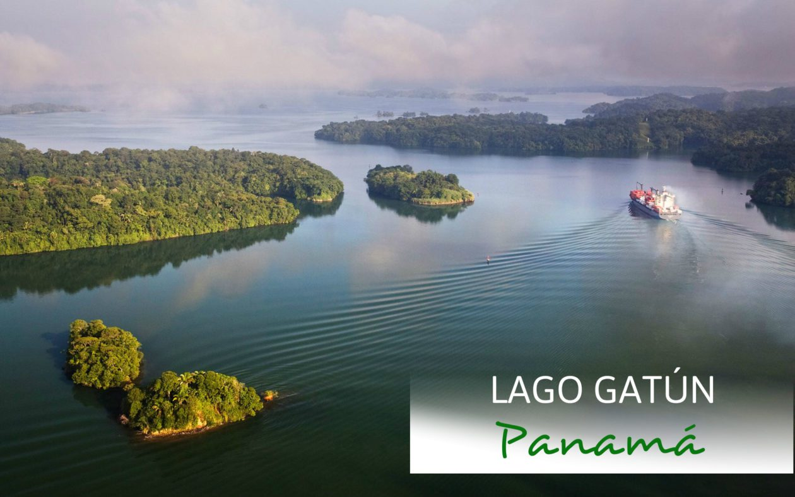

Sitios para visitar
- La Isla de los Monos
- Isla Barro Colorado (Instituto Smithsonian)
- Centro de Visitantes de Agua Clara

El corazón de agua dulce del Canal de Panamá.
El Lago Gatún es un impresionante lago artificial situado en la República de Panamá, famoso a nivel mundial por ser una parte fundamental de la ruta de tránsito del Canal de Panamá, encargada de abastecer el agua necesaria para el funcionamiento de las esclusas.
Es un destino natural de clase mundial que destaca por su densa selva tropical circundante, su exuberante biodiversidad y por ofrecer la increíble experiencia de navegar junto a colosales buques Panamax.
Tarifas de actividades (USD)
| Actividad | Precio |
|---|---|
| Tour en bote estándar (por persona) | $50.00 |
| Menores (8 a 12 años) | $50.00 |
| Niños menores de 7 años | GRATIS |
| Excursión Kayak de medio día | $40.00 |
Disfruta de los paisajes naturales y conoce las maravillas del Lago Gatún.